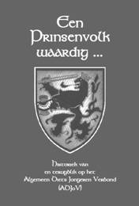
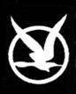
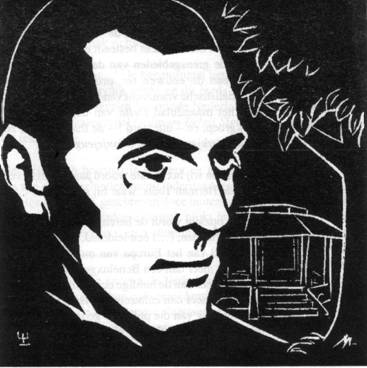

> nieuwsbrief > Jaargang 11 - nr. 3/2007
Inhoud
Hernieuwen
ledenbijdrage
2007
De
leden ontvingen ondertussen ons 11e
Jaarboek Joris van Severen. Daarbij ook
de brochure Joris
van Severen, 20e-eeuwse Belgisch staatsburger met een Europese
visie,
van de hand van Rudy Pauwels. Wie totnogtoe naliet zijn
ledenbijdrage te hernieuwen bieden we de kans dit alsnog te doen en het
nieuwe
jaarboek tegen de ledenprijs van 25 te verwerven. Dit aanbod loopt af
einde
juli; vanaf dan geldt de boekhandelprijs van 30 ..
Philippe
de Gryse is van mening dat dit
in 1921 vrijwel zeker zo was. De
Thieltsche Broeders
was een studentenbond
die de Gentse studenten af-komstig van het Tieltse, voornamelijk
oud-leerlingen
van het college aldaar, poogde te verenigen. Op de ledenlijst van deze
bond
prijkt
voor het jaar 1921 -
ook de naam Van Severen. Evenwel zonder vermelding van een voornaam.
Alhoewel
Joris van Severen nooit aan het Tieltse college les volgde, lijkt het
de auteur
vrijwel zeker dat het hier wel degelijk de Wak-kenaar (Wakken ligt vlak
bij
Tielt) betreft, die in dat jaar immers hoog-studentwas in Gent. Het
hele
verhaal vinden we terug in het heemkundig tijdschrift De
Roede van
Tielt, jg.
2007, nr. 1, pp. 3-50. Het nummer is te verkrijgen via
overschrijving van 5
op rekening
467-9350801-88, Roede
van Tielt,
Stokmolenstraat 32/3, 8700 Tielt.
Studiecentrum
Joris van Severen
- vzw
De
jaarlijkse statutaire Algemene
Vergadering van de vzw vond plaats te Kasterlee op 5 mei jongstleden.
Wie de
info terzake
van deze en de
vorige Nieuwsbrief
vergelijkt
zal vaststellen dat er enkele verschuivingen
plaats vonden. Een paar namen verdwenen uit het lijstje van de actieve
leden;
in hun plaats traden enkele jongere krachten toe.
Herdenking Joris van Severen en zijn lotgenoten te Male
Het
begrip roeping
was niet vreemd aan
het denken van Joris van Severen over de mens en de gemeenschap, niet
vreemd
aan zijn denken, ook niet vreemd aan zijn actie en zijn betrachting,
want het
ordenen en opbouwen van de mensengemeenschap
politiek in de echte
en brede zin van het woord
moest voor hem
samengaan met de vorming van de mens als persoon. Vandaar dat het
begrip roeping
niet vreemd was aan
zijn denken en streven.
Zeker,
met het begrip roeping,
hier niet te
verstaan in een strikt theologische en kerkelijke zin, zoals wanneer we
spreken
over roeping tot het priesterschap of het religieuze leven in een
persoonlijke
navolging van Christus, maar wel moet men het begrip roeping
hier verstaan in een
meer algemeen menselijke zin.
De
mens is niet niks, de mens is geroepen
om een persoon te worden in de gemeenschap, in samenhang met en in
dienst van
de ruimere gemeenschap. Dit getuigt van een positieve visie over de
mens. De
mens is en kan wat anders worden dan alleen een homo
homini
lupus, dan
een wolf voor zijn medemens. De mens kan wat anders worden en zijn
dan alleen maar een verbruiker van materiële dingen. De mens als
persoon draagt
in zich positieve eigenschappen die kunnen ontwikkeld en gevormd worden
ten
bate van de mens zelf als persoon, ten bate ook van zijn medemensen en
van de
ruimere gemeenschap.
Dit
vraagt een niet loutere
materialistische of cynische visie over de mens, maar een positieve; we
zouden
kunnen zeggen: een idealistische visie over de mens. Dit is de visie
van Joris
van Severen. Ze vraagt opvoeding en vorming, ze vraagt zelfs een zekere
ordening en opbouw van de gemeenschap die dit ondersteunt en bevordert,
in een
niet louter materialistisch gerichte maatschappij die de mensen
herleidt tot
werkers en verbruikers en waar niet-werkers en weinig-verbruikers in
het
gedrang komen: de kinderen, de zieken, de bejaarden.
En
zien we hier geen ademnood? Wie voelt
er zich nog geroepen tot onderwijs, opvoeding en vorming geven, wie
voelt er
zich nog geroepen tot de verpleging van zieken of bejaarden, wie voelt
er zich
nog geroepen zelfs tot het huwelijk en tot ouderschap? Ik zeg niet dat
er geen
zijn, gelukkig wel, maar voelen we hier geen ademnood? Kunnen we niet
zeggen
dat niet alleen de religieuze roepingen in strikte zin problematisch
geworden zijn,
maar ook de roeping van de mens als persoon - de roeping tot een niet
louter
materiële bestemming, tot een positieve onbaatzuchtige inzet in en voor
de
ruimere gemeenschap - in het algemeen in
crisis is?

Historiek van en terugblik op het
Algemeen
Diets Jongeren Verbond
Onder het
Blauwvoetembleem hiernaast waren sedert het einde van de
Tweede Wereldoorlog meerdere elkaar opvolgende jeugdformaties actief.
Uit het
Jeugdverbond der Lage Landen groeide het Algemeen Diets Jeugdverbond
(ADJV)
onder leiding van Staf Vermeire. Toen Jaak de Meester halverwege de
jaren
vijftig de teugels overnam wijzigden de initialen in BJV
(Blauwvoetjeugdverbond). Bij het verdwijnen van dit jeugdverbond grepen
enkele
kaderleden ervan terug naar de oude initialen en startten ze het
Algemeen Diets
Jongeren Verbond (ADJoV) op. In 1968 werd dit het Algemeen Nederlands
Jeugd
Verbond (ANJV).
Over deze laatste
etappes
(1961-1969) handelt deze publicatie. Daarin wordt vooreerst de context
geschetst van het ontstaan van het ADJoV. Aansluitend volgt een
historiek van
het reilen en zeilen van het Jongerenverbond in die jaren. Vervolgens
komen een
aantal geëngageerde getuigen aan het woord middels een terugblik op hun
wedervaren over de tijd van toen. Dit gedeelte sluit tenslotte af met
een
chronologische blik op de praktische werking.
Wat hen toen dreef
en
bezielde (en vaak ook nu nog bezielt) en hoe ze dit wisten te beleven,
blijkt
uit de daarop aansluitende standpunten en verslagen, overgenomen
uit de
toenmalige ADJoV-contactorganen. Dit blijkt, als het ware in de marge,
ook uit
het luik ontmoetingen, die hun jeugdjaren onvermoede en verrijkende
vergezichten boden.
Het laatste
hoofdstuk van
deze publicatie brengt het ADJoV in beeld, middels een ruime
chronologisch
opgevatte selectie maar liefst 130 fotos - uit de verzamelingen van
hen die
het allemaal mee- en waar maakten. Afgesloten wordt met het
namenregister. Het
ISBN luidt 978-90-9021654-6.
Het
boek telt 176 paginas (formaat 23 x
INHOUD
- Een Prinsenvolk waardig
3 Ten
geleide
5 Diets ende Paaps
12
Ontstaan en werking van het Algemeen Diets
Jongerenverbond
30
Een Dietse jeugd
Pol
van Caeneghem
34
Terugblik
35
Het ondergrondse leger
van Keizer Qin Shi Huang
38
Een verhaal van liefde
44
Wat bezielde je toen?
46
Een persoonlijk verhaal
Hugo
Morael
50
Het flamingantisme
voorbij
53
Met hart en handen
Stan Sluydts
56
Chronologie werking
ADJoV
63
Verbondslied
64
Standpunten
64
Wat is en wil het Algemeen Diets
Jongeren Verbond (ADJoV)?
66
Ons nationaal
bewustzijn
69
In de kijker
71
Naar nieuwe horizonten
75
Levenswet
76
Verslagen
76
Trektocht doorheen Noord Nederland 80 Ons Nederland in Frankrijk 81 Paaskamp in
Bretagne 84 Op kamp in de Lünebuger Heide
87
Ontmoetingen
87
Per Denez 90 Valère Depauw 92
Romain de
Saegher 94 Michiel Leenknegt 96
Jean-Marie Gantois 97 Arnold Meijer 98
Wies Moens 99 Valery
Stuyver 101 Gaston Theunynck 102
Alfred Töpfer 103 Jos van den Abeele 104
106
Noten
109
Het ADJoV in
beeld:
chronologische fotoreportage
174
Namenregister
176
Inhoudsopgave
Rudolf
Claeys
Wie
Rudolf Claeys - de man achter dit getuigenis -
was en welke rol hij speelde binnen het
Verdinaso, mag genoegzaam blijken uit zijn tekst. In de Nieuwe
evenzeer als
in de oude - Encyclopedie van de Vlaamse Beweging zoekt men
tevergeefs naar
zijn naam en levensdata. Uit de context van zijn verhaal kan afgeleid
worden
dat hij kort na 1900 moet geboren zijn, als zoon van een onderwijzer te
Gullegem. Zelf werd hij aanvankelijk ook onderwijzer; als 19-jarige
stond hij
voor de klas in het West-Vlaamse Watou. Zijn betrokkenheid bij de
Vlaams-nationalistische activiteiten van Meester Butaye voor wie
hij naar
verluidt ook als ghostwriter optrad leverde hem een tik van de
kromstaf van
de Brugse bisschop op en resulteerde finaal in broodroof.
Hoe hij
vervolgens in de sociale beweging van Juul
Declercq actief werd en finaal door het nationaalsolidarisme van het
Verdinaso
gegrepen werd, blijkt genoegzaam uit zijn relaas.
Uit
zijn verder curriculum Vitae dat we in wat volgt
fel ingekort hebben blijkt zijn dadendrang hem in de VNV-collaboratie
gedreven te hebben, waarin hij te Brussel een vooraanstaande rol
speelde binnen
de sociale vleugel van de Eenheidsbeweging. De repressie liet hem niet
ongemoeid, maar omtrent zijn proces en strafmaat tasten we vooralsnog
in het
duister. Wel is geweten dat hij omstreeks 1948 zijn gezin wist te
herenigen in
Argentinië. (*)
We
danken de Z.E.H.
Mijn
politiek curriculum Vitae
Reeds als jongen
van een
tiental jaren werd ik goed warm gemaakt voor Vlaanderen en zijn volkse
beweging. Ik trok me toen reeds terug met De
Leeuw van Vlaanderen die ik meermaals herlas, en ook met een paar
geschriftjes
van De Zwarte Leeuw, een organisatie
in mijn geboorteplaats Gullegem, waarvan mijn vader deel uitmaakte.
Aan tafel moesten
wij
kinderen zwijgen, maar we hoorden des te beter de kritiek van onze
ouders op de
verkeerde en onrechtvaardige handelswijze van rijke lui en
autoriteiten,
waarmee de arme en vooral de simpele sjouwers werden verdrukt. Vader
deed het
soms in bewoordingen die me deden ineenkrimpen op mijn stoel, en me
tegenstrijdig leken met de opvoedingslijn die hij ons voorhield:
eerbied voor het
gezag en haar wetten en reglementen (zo geestelijk als wereldlijk);
maar ik
wist ook dat hij eerbiedig zijn hoed afnam voor de vooraanstaanden,
terwijl
zijn hart gedurig klopte voor de armen en de sukkelaars, waaraan hij
het
grootste gedeelte van zijn vrije tijd offerde, teneinde ze te helpen
door hun
moeilijkheden heen te komen.
Aldus, met de
boterham, de
pap en de aardappelen, heb ik me als kleine vent reeds, met mijn
Vlaamse en
volkse gezindheid geassimileerd. Mijn zin voor rechtvaardigheid en
vooral mijn
streven voor de verbetering van het lot van de ongelukkige kleinen,
werd een
natuurplooi voor mij tot het einde van mijn dagen.
Joris en Maurits
Debry, de
twee oudste zonen van de notaris, die destijds ook burgemeester was van
Gullegem, kwamen dagelijks bij ons thuis aankloppen tijdens de
speeltijd, om
een tas melk te drinken. Het waren twee goedopgevoede en intelligente
schooljongens, enkele jaren ouder dan ikzelf, die mij door mijn ouders
als
stichtende voorbeelden gesteld werden.
Toen ik in 1918 een
kersvers
studentje werd, waren beide broers Debry reeds gevorderde seminaristen,
en ze
kwamen me uitnodigen voor de eerste van mijn studentenvergaderingen. Ik
voelde
me met deze bijeenkomst in het patronagegebouw te Gullegem, met een
twintigtal
andere studenten, hoogst gelukkig. Vooral omdat beide voornoemde heren,
die me
steeds ten voorbeeld waren gesteld, gedachten en gevoelens tot uiting
brachten,
die helemaal éénstemmig waren met hetgeen er in mij roerde. Het trof me
dat de
zoons van een brave en eerlijke, doch aristocratische en Fransgezinde
notaris,
zich zo zonder omwegen eenstemmig uitspraken voor de strijd van de
rechten van
de Vlaamse verdrukten. Maurits vroeg me om voor de volgende vergadering
een
voordrachtje voor te bereiden; ik herinner me niet goed meer waarover
het
precies ging. Alleen weet ik dat het een gloeiend Vlaamsgezind
strijdbetoog
werd (dat Maurits eerst had nagelezen) en dat me direct als een goed
krijgertje kenmerkte, want enkele dagen nadien, toen we naar Onze
Lieve Vrouw
van Dadizele ter bedevaart trokken, kreeg ik de studentenvlag de
fiere
Vlaamse Leeuw te dragen. Een jonge priester vroeg me toen ook of ik
gebeden
had om een goed soldaat voor Vlaanderen te worden en het ja! daarop
zindert
nog altijd door mijn ziel. Ik kan zeggen dat dit ja mij heeft
gedetermineerd,
mij zal blijven richten.
In de Normaalschool
te
Torhout1 stond ik mee aan de spits van de meest radicale
Vlaamsgezinde groep. Ik walgde van het minimalisme en vond het sluiten
van
koopjes niet slechts onwaardig maar ook onrechtvaardig. Ik was
(achteraf
gezien) misschien wel eens te onbezonnen, want ik werd niet slechts als
straf
voor enkele dagen naar huis gestuurd, maar had, stelde men, de school
tegenover
de Staat in opspraak gebracht. Het incident kon gelukkig bijgelegd
worden,
waarbij ik de les leerde dat men wel zuiver en radicaal kan zijn van
beginselen, maar tevens ook tot nut van het algemeen, bij zijn
bestrevingen met
tact en aanpassingsvermogen moet weten om te springen.
Als jong
onderwijzer (19 jaar)
kreeg ik het nogal te verbijten: geplaatst in een gemeente van
welgedane
conservatieve hoppeboeren (Watou), die het andere nederige gedeelte van
de
bevolking beschouwde als weinig meer dan lijfeigenen, toonde ik maar al
te
duidelijk mijn genegenheid en mijn bijzondere toewijding voor deze
laatsten. De
antisfeer verergerde nog doordat precies die kaste hoppeboeren gekant
stond
tegen de Vlaams-nationalistische Mr. [Emiel] Butaye.2 Ik
werd
natuurlijk de goede vriend van de al te brave meester Butaye, en ik mag
zeggen
dat ik er het mijne toe heb bijgedragen om van hem in de volgende jaren
een
principevaste Vlaams-nationalist te maken. Méér: mijn vader troonde me
in die
jaren mee naar de radicale fractie van de onderwijzersbeweging. Het
waren
omzeggens allen Vlaamse nationalisten, en daar werd ik bijzonder
bevriend met
Jef Devos , de eerste onderwijzer van West-Vlaanderen die omwille van
zijn
nationalistische overtuiging op straat werd gezet.
Ook ikzelf kwam aan
de beurt
om de hand van Mgr. Waffelaert3 te voelen, toen ik in Watou
een
betoging organiseerde, waarbij meester Butaye, advocaat Jeroom Leuridan4
en ikzelf op het podium zouden komen. Als onderwijzer van een
katholieke
aangenomen school, kreeg ik van het bisdom verbod om op die betoging te
verschijnen. Ik kwam dat verbod na, maar kon het niet nalaten om er in
mijn
antwoord aan Mgr. Waffelaert tevens op te wijzen dat ik
eerlijkheidshalve moest
bekennen dat zijn verbod niets wijzigde aan mijn overtuiging;
integendeel, dat
een zielstoestand als deze niet door materiele dwangmaatregelen kon
weggecijferd worden. Dit laatste moet hem zeer zwaar op de maag gelegen
hebben,
want spijts mijn getuigenis van uiterlijke tucht werd ik gebroodroofd
en kreeg,
zonder verdere opgave van reden, op het einde van 1920 mijn ontslag als
onderwijzer.
Ik werd journalist,
uitgever
en redacteur van De Ypersche Bode, het
Vlaams-nationalistisch weekblad voor het arrondissement Ieper,
Poperinge en
Wervik. Samen met Juul Declercq5 van Izegem stichtte ik [te
Ieper]
meteen de nationalistische syndicaten en ziekenbonden en organiseerde
er een
bestendig Vlaams-nationalistisch secretariaat.
Ik voelde echter
een afkeer
ten overstaan de egoïstische partijpolitieke berekeningen, bemoeide me
vooral
met sociale aangelegenheden en het geven van voordrachten over het
Nationaalsolidarisme.
Op 1 januari 1931
trachtte ik
me verdienstelijk te maken als lid van de Commissie van Openbare
Onderstand6
te Ieper, waarbij ik me vooral bezig hield met het wezenhuis, het
hospitaal en
de ouderlingenzorg, taak waarvan ik me gedurende zes jaar heb gekweten.
Mijn politieke
opties maakten
me tot volgeling van Joris van Severen, en mede zijn voordrachten over
het
Nationaalsolidarisme, hebben me aanleiding gegeven tot het stichten van
het
Dinaso, later Verdinaso [te Ieper].
De activiteit die
in deze
periode uitging van het Vlaams Huis aldaar vond ik te eng en te
kleinburgerlijk. Ik richtte een nieuw tehuis op in de Tempelstraat te
Ieper:
het Diets Huis. Ik bouwde er een zaaltje en burelen van waaruit naar
alle lagen
van de Ieperse bevolking een drukke activiteit aanving.
Ik was vooral in de
richting
van het Dinaso gedetermineerd door mijn sociale studies en gevoelens.
Ik had
steeds behoord tot de meest revolutionaire spits van de solidaristische
opvattingen, waarbij priester Odiel Spruytte7 me de weg had
gewezen.
Ik had geen vrede met de zeer weke opvattingen en nog minder met de
bedenkelijke manoeuvres van de christendemocraten van die tijd. De
socialisten
vond ik al te uitsluitend materialistisch en in strijd met mijn
christelijke
overtuiging. Wanneer minister Camiel Huysmans8 mij
vriendelijke
voorstellen deed naar aanleiding van mijn afzetting als onderwijzer
wees ik
die af. Het spijt me nu nog dat ik dat toen met zo weinig tact deed,
want die
man meende het goed met me.
Doch ook ten
overstaan van
mijn goede vriend meester Butaye ben ik hard geweest. Toen ik me
solidair
verklaarde met de principes van Joris van Severen, kwam Butaye me tot
tweemal
toe bezoeken in mijn huis in de Boomgaardstraat te Ieper, teneinde me
van mijn
ongelijk te overtuigen. Volgens hem brak ik mijn carrière, gezien hij
mij had
aangeduid als tweede kandidaat en eerste opvolger op zijn
verkiezingslijst.
Daar ik niet te kopen was hebben we elkaar, niet zonder droefheid, de
rug
toegekeerd en later zelfs in volksvergaderingen tegenover mekaar
gestaan,
waarbij hij vooral [Jef] Devroe9 van Brugge tegenover mij
gebruikte.
Als tweede kandidaat op Butayes lijst fungeerde uiteindelijk [Marcel]
Vandenbulcke10 uit Vlamertinge, die overigens samen met hem
tot
volksvertegenwoordiger verkozen werd.
Als Gewestleider
van het
Verdinaso voor het arrondissement Ieper, Poperinge, Wervik had ik een
drukke
strijd te leveren en binnen de centrale leiding van het Verbond werd ik
tevens
stichter en organisatieleider van het Verbond van Dinasocorporaties,
tot het
uitbreken van de Tweede Wereldoorlog en de moord op Joris van Severen.
Met het tragische
wegvallen
van Joris van Severen was het Verdinaso zijn hoofd en de kluts kwijt:
er kwam
geen standpunt en geen richting ten overstaan van de uitzonderlijke en
zeer
complexe toestanden waarin we leefden (oorlog, capitulatie, bezetting,
Koninklijke oproep tot normalisatie van het bedrijfsleven en praktische
verstandhouding met de bezettende overheid). Onder ons, Dinasos,
traden twee
stromingen naar voor: de ene vond de omstandigheden niet geschikt om de
strijd
voort te zetten en zou het liefst bij de pakken blijven zitten en
afwachten; de
andere integendeel vond dat wij activisten moesten zijn, dat de strijd
voor
Vlaanderen nooit mocht ophouden en de nieuwe omstandigheden slechts tot
een
nieuwe marsrichting verplichtte.
Ik sprak met mr.
[Emiel]
Thiers11 en Juul Declercq en verdedigde dit tweede standpunt
als het
mijne. Ze lieten mij vrij en ik trad toe tot de Eenheidsbeweging: een
naar de
[sociale] beginselen van het Verdinaso reeds fel geëvolueerd VNV, dat
me
toeliet de sociaaleconomische stellingen waarvoor ik steeds in de bres
had
gestaan, verder na te streven. In de Ieperse stadsschouwburg, tijdens
het
eerste oorlogsjaar, werd mijn toetreding tot de Eenheidsbeweging bekend
gemaakt.
Aanvankelijk kreeg
ik tot
opdracht de politieke scholing van de kaders in het arrondissement op
mij te
nemen. Doch begin 1941 riep de leiding van het VNV (Staf de Clercq)12
mij naar Brussel teneinde mij in te schakelen in de leiding van de
sociaaleconomische politiek. Aldus vestigde ik me als leider van de
hoofddienst
Sociaaleconomische Aangelegenheden in de lokalen aan de Miniemenstraat
te
Brussel.
Ik wil er ook nog
op wijzen
dat ik, maanden vóór er sprake was van Winterhulp, samen met de
Commissie van
Openbare Onderstand te Ieper, voor de armen een dagelijkse soepbedeling
organiseerde, en vooraleer ik Ieper verliet voor mijn opdracht in
Brussel,
richtte ik, op aanvraag van burgemeester Vanderghote13 ,
voor het
gewest Ieper, in de Diksmuidsestraat, een bestendig secretariaat op van
Winterhulp.
Te Brussel heb ik
me verder
ingezet voor de verspreiding van onze Nationaalsolidaristische
opvattingen, en
de vorming van de elementen voor de sociale kaders, zowel in de
politieke
organisatie van het VNV als binnen de publieke organisaties van het
hervormde
staatsbestel. Als beslist tegenstander van de Nazi-filosofie, werden me
bij
mijn opdrachten flink wat stokken tussen de benen gestoken. De
SS-gezinden
maakten het me soms bijzonder lastig; het meest diende ik op mijn
tanden te
bijten binnen de Unie voor Hand- en Geestesarbeiders, en men sloot voor
me
steeds weer de grenzen bij mijn bemoeienissen ten overstaan van het lot
van de
in Duitsland tewerkgestelde Vlaamse arbeidskrachten. In het
Rijksarbeidsambt te
Brussel was ik beter thuis: ik kon meer meermaals de volkse trouw en
het
organisatietalent van Directeur-generaal Hendrickx bewonderen, en
ongedwongen
stelling nemen tegen een te strakke verstaatsing, vooral op het gebied
van de
beroepsoriëntatie. De loon- en prijzenpolitiek had ik goed onder
controle: dr.
Leo Wouters14 had mijn volste vertrouwen; hij was een ware
Vlaamse
vriend die ook aardig wat te kampen had. In de organisatie van het
beroepsleven
kon ik wel iets, maar niet zeer veel in de pap brokkelen bij [Victor]
Leemans15,
want de Duitsers hadden hiervoor niet veel interesse! Ik heb dan een
paar keer
een slag kunnen thuishalen: zo de kandidatuur van mijn man voor de
leiding van
de bouwbedrijven, tegen de door de Duitsers voorgedragen SS-kandidaat.
Ik hield
me steeds voorzichtig buiten alle diensten van de bezetter en
concentreerde me
tegen de Nazi-levensbeschouwing waarmee ik het absoluut niet eens was.
(
)
Noten
(*) De naam van Rudolf Claeys valt ook in ons
zopas
verschenen 11e Jaarboek Joris van Severen,
meer bepaald in de bijdrage van
1 De Torhoutse Normaalschool stond bekend als
een
kweekvijver van het Vlaams-nationalisme.
2 Emiel Butaye (1882-1953) werd als
onderwijzer
eveneens gevormd in de Torhoutse Normaalschool. Na WO.I werd hij het
stemmenkanon van de Vlaams-nationalisten in de Westhoek. Van 1921 tot
1944
was hij volksvertegenwoordiger, eerst voor de Frontpartij, later voor
het VNV.
3 Waffelaert Gustave (1947-1931), sedert 1895
bisschop
van Brugge. Vanaf 1920 zou hij regelmatig het Vlaams-nationalisme als
gedachtestroming veroordelen.
4 Jeroom Leuridan (1894-1945),
oorlogsvrijwilliger,
leraar en later advocaat te Ieper. Vormde vanaf 1921 samen met Joris
van
Severen het leidend duo binnen de West-Vlaamse Frontpartij en binnen de
redactie van De West-Vlaming.
5 Declercq Juul (1897-1955), was aanvankelijk
vrijgestelde van de christelijke vakbond te Izegem; trad in 1924 toe
tot O.
Spruyttes studiekring en stichtte in 1929 het Vlaams Nationaal
Vakverbond.
Volgde Joris van Severen met dit vakverbond in het Verdinaso (Verbond
van
Nationale Arbeiderssyndicaten) en werd later de algemene
propagandaleider van
het Verdinaso.
6 Commissie van Openbare Onderstand; thans
OCMW
geheten.
7 Spruytte Odiel (1891-1940), was aanvankelijk
proost
van de Izegemse sociale werken (zie noot 5) maar werd na conflict
binnen het
ACW weggepromoveerd als kapelaan; evolueerde in de jaren 30 tot
geestelijk
leidsman van de VNV-leider Staf de Clercq.
8 Huysmans Camille (1871-1968), sedert 1900
actief
binnen de Belgische Werkliedenpartij, een van de drie flamingantische
kraaiende hanen, jarenlang parlementair en burgemeester van Antwerpen.
9 Devroe Jef (1905-1976), in zijn jonge jaren
actief in
het AKVS, later in het Vlaams Nationaal Syndicaat (VNV-strekking);
vanaf 1936
VNV-volksvertegenwoordiger, werd hij in 1941 oorlogsburgemeester van
Brugge.
10 Vandenbulcke Marcel (1879-1954),
graanhandelaar uit
Vlamertinge, actief in de Vlaams-nationalistische politiek, eerst als
gemeente-
en provincieraadslid, vanaf 1929 als volksvertegenwoordiger voor het
arrondissement Ieper.
11 Thiers Emiel (1890-1954), advocaat, samen
met Joris
van Severen actief in de Frontpartij (provincieraadslid) en haar
opvolgers, tot
aan de stichting van het Verdinaso op 6 oktober 1931. Tal van functies
binnen
het Verdinaso, waarvoor hij o.m. zetelde in het in 1938 opgerichte
Studiecentrum tot Hervorming van de Staat. Volgde Joris van Severen op
als
leider van het Verdinaso, maar slaagde er niet in de tweedracht binnen
het
Verbond, ontstaan na 20 mei 40, te overstijgen.
12 De Clercq Staf (1884-1942), onderwijzer en
oorlogsvrijwilliger, werd hij onmiddellijk na WO.I kamerlid voor de
Frontpartij. In 1933 stichtte hij het Vlaams Nationaal Verbond (VNV)
dat hij
in 1940 de collaboratie binnenloodste en waarvan hij tot aan zijn
overlijden de
leider bleef.
13 Vanderghote Jean Charles (1891-1953)
christendemocratisch
burgemeester van Ieper van 1933 tot 1942 en van 1944 tot 1953. (Met
dank een Het geheugen van Ieper voor de info).
14 Wouters Leo (1902-1987), advocaat, in zijn
jeugd
actief in het AKVS, later redactiesecretaris van Jong
Dietsland; behoorde tot de Groot-Nederlandse strekking binnen
het VNV en werd in 1941 generaal-gevolmachtigde voor de Arbeid.
15 Leemans Victor (1901-1971), aanvankelijk
onderwijzer,
later doctor in de sociologie, kende hij talrijke engagementen binnen
de
Vlaamse Beweging; stichter van Jong
Dietsland; tijdens WO.II o.m. secretaris-generaal van het
ministerie van
economische zaken.
De folder voor de
herdenkingsmis te Male voor Joris van Severen, die u als bijlage bij de
vorige Nieuwsbrief vond, was geïllustreerd met
een recent ontstane houtsnede van de hand van Wim de Cock.
We nemen ze hieronder andermaal op.

De kunstenaar
beschikt nog
maar over een 10-tal genummerde en gesigneerde exemplaren van deze
unieke
houtsnede, die met de handpers rechtstreeks van het blok werden
gedrukt. Wie
belangstelling heeft kan 12,50 (inclusief verzending) overschrijven
op
rekening 001-028269819 t.n.v. Wim de Cock, L. Schreederslaan 12, 9111
Belsele.
De eigenlijke houtsnede meet 9,5 x
Op 14 maart j.l.
overleed te
Mons/Bergen Janine Colson,
echtgenote
van ons medelid Jean-Pierre
Destrebecq.
Zij werd geboren te Petit-Rechain op 7 april 1941. Reeds 45 jaar lang
was zij
aan de onderste ledematen verlamd. Jean-Pierre
Destrebecq was
sinds 1966 lid van de Joris van Severen
Orde onder de leiding van Louis Gueuning.
We
vernamen het overlijden op 1 januari van Constant Ardies
uit Mechelen, oud-Jong-Dinaso, maar sinds vele
jaren woonachtig in De Panne, waar hij het kasteeltje van De Moeren had
omgebouwd tot verkoopplaats van Chinese kunst. Was voor zo ver we weten
een
7-tal jaren geleden nog in Abbeville. Hij werd op maandag 8 januari
j.l. in De
Panne begraven. Dit bericht verscheen eerder (in de Nieuwsbrief
2/07) maar dan met de fout gespelde familienaam Hardies
i.p.v. Ardies.
Ook de
oud-Jong-Dinaso Erik
van Herzeele (25 mei 1928 13
april 2007) ging heen. Hij was de jongste zoon van Pol van Herzeele. Na
WO.II
was hij een tijd lang lid van het jeugdvendel Sint Gerolf,
binnen het Xaveriuscollege te Borgerhout, waarin pater
Van Laer een rol speelde. Erik was Dr. Juris, Lic. Pol & Soc en
Bacc. Phil.
In zijn beroepsleven vervulde hij een leidende functie binnen Bekaert.
(VE)
Ook (Albert) Louis Stockmans (17
september 1916 24 april 2007), oud-Dinasomilitant, kwam ons te
ontvallen.
(MvdB).
We vernamen ook het
overlijden van Leo
Olyslager (26
november 1919 2 maart 2007). Leo was opgegroeid in een Antwerpse
zakenfamilie
en gevormd in het Jong-Dinaso en de DMO. (MvdB)
In deze
rubriek verwijzen we zonder veel commentaar naar recente publicaties
waarin
Joris van Severen en/of het Verdinaso vermeld worden. We citeren de
meest
treffende passussen woordelijk zonder daarin volledigheid na te
streven. We
verzoeken onze lezers, met ons, uit te zien naar publicaties die voor
deze
rubriek 'stof' kunnen leveren en ons kopie van de betreffende passages
toe te
sturen.
Ideologische
collaboratie
(
) De
ideologische
collaboratie is de collaboratie van diegenen die in eerste instantie
willen
collaboreren om hun nationaalsocialistische of hiermee verwante
extreemrechtse
denkbeelden te verwezenlijken. Vóór de oorlog waren er enkele
dergelijke kleine
groepjes in Vlaanderen, maar die hadden noch veel aanhangers noch veel
invloed.
(
) Het Verdinaso moet hierbij zeker niet gerekend worden omdat het
Verdinaso
als zodanig tot 1941 zeker geen nationaalsocialistische idealen
verkondigde, en
als autonome politieke en/of ideologische factor door de moord op Van
Severen
en door het ontstaan van de eenheidsbeweging in 1941 volledig
uitgeschakeld
was. Diegenen die Van Severen best meenden te kennen, beweren steevast
dat hij
niet zou gecollaboreerd hebben. Dat is vermoedelijk juist, maat valt
uiteraard
niet te bewijzen noch te weerleggen. De leden van het Verdinaso hebben
zich in
diverse richtingen verspreid, en zodoende verschillende collaboratie-
of
verzetsgroepen vervoegd. (
)
________________________
Hugo Thibaut, Vlaams bewogen in de 20e eeuw.
Mijn verhaal, Uitgave Familie Thibaut, Kapellen, 2005, p. 107.
Een
positieve noot tot besluit?
(
) Joris van
Severen heeft
een belangrijke historische betekenis en zijn Verdinaso heeft
onmiskenbaar
impact gehad op de politieke geschiedenis van dit land. Het
gedachtegoed van
het nationaal solidarisme bevat bovendien tal van waardevolle
elementen, die
ook vandaag nog inspirerend kunnen werken. Maar dit alles betekent
daarom nog
niet dat men Joris van Severen op het altaar der Heiligen moet
verheffen.
Heilig was hij zeker niet, integendeel.
______________________